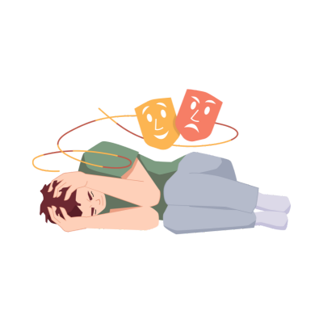

What is Schizophrenia?

Schizophrenia is a severe mental health disorder that affects how a person thinks, feels, and behaves. It
can cause significant changes in a person’s ability to differentiate between reality and imagination.
Schizophrenia is not the same as having a "split personality" (as commonly misunderstood), but rather, it
involves experiencing delusions, hallucinations, and severe disruptions in thought patterns.
While the exact cause of schizophrenia is still unknown, it is believed to be a combination of genetic,
biological, and environmental factors. It affects about 1 in 100 people globally, and with the right
treatment, individuals with schizophrenia can lead fulfilling lives.
Symptoms of Schizophrenia
Schizophrenia symptoms may vary from person to person, but some of the most common symptoms include:
- Hallucinations: False perceptions of reality, such as hearing voices or seeing things
that are not there.
- Delusions: Strongly held false beliefs, such as thinking someone is plotting against them
or believing they have special powers.
- Disorganized Thinking: Difficulty in organizing thoughts, making it hard to speak clearly
or logically.
- Negative Symptoms: Lack of motivation, withdrawal from social activities, and reduced
ability to experience pleasure.
Causes of Schizophrenia
The exact cause of schizophrenia is unknown, but several factors are believed to contribute:
- Genetics: A family history of schizophrenia increases the likelihood of developing the
disorder.
- Brain Chemistry and Structure: Imbalances in certain brain chemicals (such as dopamine)
and structural changes in the brain may contribute to schizophrenia.
- Environmental Factors: Stressful life events or childhood trauma may act as triggers for
the disorder in those predisposed to it.
Treatment for Schizophrenia
There are several effective treatment options available for schizophrenia, including:
- Antipsychotic Medications: These medications are the primary treatment for schizophrenia and
help manage symptoms like delusions and hallucinations.
- Cognitive Behavioral Therapy (CBT): CBT can help individuals manage their symptoms and
improve their coping skills.
- Supportive Therapy: Therapy involving social support can help individuals manage everyday
challenges, build skills, and improve social functioning.
With a combination of medication and therapy, people with schizophrenia can work towards managing their symptoms
and improving their quality of life.